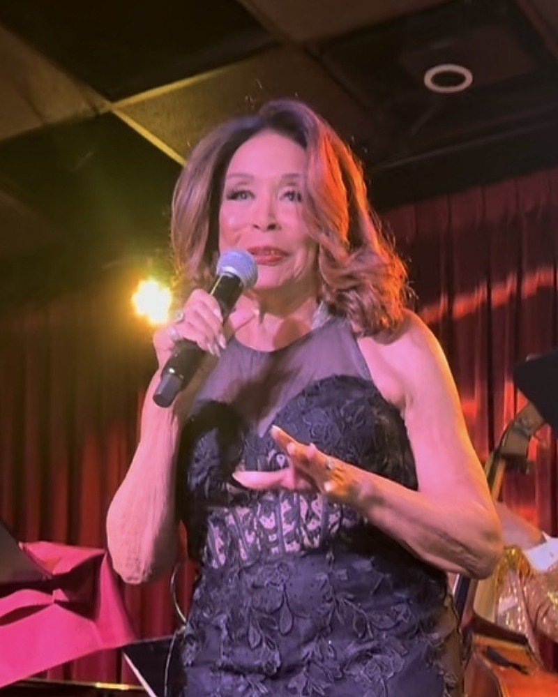

Press release
At 84, the legend “made time stand still” on VMAs weekend, and Los Angeles is still talking.

LOS ANGELES — Freda Payne turned 84 on September 19. One week later she walked onto the stage of a sold-out Catalina Jazz Club and delivered a night that two publications have since called a triumph.
Freda Payne Portrays and Honors Legendary Ladies of Song, written and directed by Donald B. Welch and presented by Don B. Welch, played Saturday, September 26, on the weekend of the MTV Video Music Awards, when much of Los Angeles was looking downtown. The hottest ticket in Hollywood turned out to be on Sunset Boulevard.
“This was not a tribute show. This was testimony.”
Newswire Hollywood
“Freda Payne Set Hollywood on Fire”
“From first note to last, a triumph.”
Gospel News Access
“Freda Payne Made Time Stand Still”
Payne honored nine women who shaped American song: Ella Fitzgerald, Sarah Vaughan, Peggy Lee, Gloria Lynne, Dakota Staton, Lena Horne, Nancy Wilson, Dinah Washington and Eartha Kitt. Her program included “How High the Moon,” “I Wish You Love,” “The Late Late Show,” “Body and Soul,” “Guess Who I Saw Today” and “Fever,” which she sang in gold with two dancers brought up onto the stage.
“The idea of doing a show honoring the legendary ladies of song and jazz was brought to me by my dear friend Donald B. Welch,” said Payne. Of her special guest, Thomasina Gross, who portrayed Eartha Kitt: “She does this portrayal spot on.”
A note from Payne printed on the evening’s running sheet reads: “I am so blessed to see another year and still be working. I thank God for that.”
“Freda Payne has been doing this for six decades, and on Saturday night the room stood still for her. We are proud to work with her, and glad to talk with anyone about where this production goes next.”
A spokesperson for PR STARPOWER
Stefanie Powers and Loretta Devine were among the guests in the room.
Payne sails at the end of October aboard Holland America, performing on a cruise from Fort Lauderdale to Puerto Rico and back, with Darlene Love and Wayne Newton also on the bill.
Photographs by Terry Bryant and performance video are available for editorial use with credit. Video: youtu.be/MsRGnm458fo · youtu.be/Iu58ZFcRw6Q · youtu.be/mISIKPyYvig. Freda Payne’s official website: fredapayne.net.
Note. PR STARPOWER handled publicity for this engagement. Newswire Hollywood and Gospel News Access are separate publications, and their reviews are quoted above as published.
PR STARPOWER is a publicity and public relations company. It handled publicity for Freda Payne’s September 26, 2026 engagement at Catalina Jazz Club.
— ENDS —
Companion story
How a sixteen-year-old at a Michigan summer resort became the woman who sang her heroes home.
The summer Freda Payne was sixteen, her mother had a cottage at Idlewild, the Black resort community in Michigan. Payne was living in Detroit. She and her sister were allowed into the matinees at Idlewild, but not the nightclubs after dark.
“We were still in our teens,” she says. “And I remember her song.”
The song was “The Late Late Show.” The singer was Dakota Staton. Sixty-odd years later, on Saturday, September 26, Payne sang it herself at a sold-out Catalina Jazz Club in Los Angeles, one week after her eighty-fourth birthday.
In between came a career that runs six decades and includes “Band of Gold,” the 1970 hit that made her name around the world. It also included the women she once heard at those matinees and, in time, met.
Sarah Vaughan was one of them. “Her voice was like listening to a violin or a viola,” Payne says. “Very soothing.”
Dinah Washington was another, and a more alarming one. Payne was young when they met and did not think the older singer liked her. “I think it’s because I kind of stood up to her,” she says of how Washington came around. “She could tell I was no pushover.” Washington died at thirty-nine.
Of Lena Horne, Payne is direct. “She wasn’t a pussycat kind of a woman,” she says. “She was like, don’t mess with me, buddy.”
Her friend Donald B. Welch, the playwright and director, brought her the idea for the show. It became Freda Payne Portrays and Honors Legendary Ladies of Song, and it sold out on the weekend that the MTV Video Music Awards pointed every camera in town the other way.
It is a show built on what Payne remembers, and she remembers a great deal. “I am so blessed to see another year and still be working,” her note on the running sheet reads. “I thank God for that.”
The girl from Idlewild, in other words, is still in the room. She just gets a better seat.